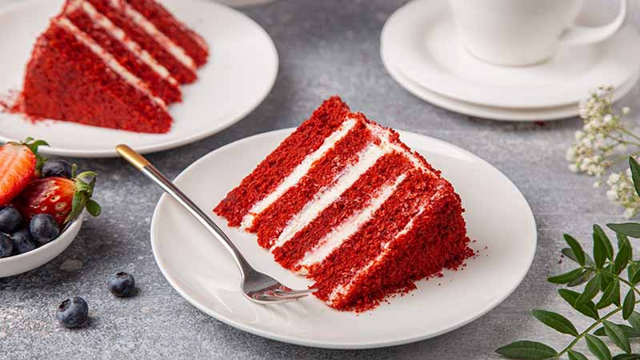

Torta Red Velvet Classica
L'inconfondibile icona della pasticceria americana. Strati di pan di Spagna dal colore rosso rubino e dalla consistenza vellutata, farciti ed avvolti da un delizioso e fresco frosting al formaggio spalmabile.

Ingredienti
Per le Basi Rosse:
- 300g di Farina 00
- 300g di Zucchero semolato
- 120g di Burro ammorbidito
- 2 Uova medie (a temperatura ambiente)
- 250ml di Latticello (o 125ml di latte + 125g di yogurt bianco + 1 cucchiaino di succo di limone)
- 15g di Cacao amaro in polvere
- 1 cucchiaino di Bicarbonato di sodio
- 1 cucchiaino di Aceto di mele (o bianco)
- 1 cucchiaino di Estratto di vaniglia
- 1 pizzico di Sale fino
- q.b. Colorante alimentare rosso in gel (circa 1-2 cucchiaini)
Per il Cream Cheese Frosting (Farcitura e Copertura):
- 350g di Formaggio fresco spalmabile (es. Philadelphia)
- 250g di Mascarpone (o panna da montare)
- 120g di Zucchero a velo
- 1 cucchiaino di Estratto di vaniglia
Procedimento
- Preparazione del latticello e colore: Se non trovi il latticello pronto, unisci latte, yogurt e limone e fai riposare 10 minuti. Aggiungi il colorante rosso in gel e la vaniglia al latticello mescolando fino a ottenere un rosso brillante.
- Montatura base: Lavora il burro morbido con lo zucchero e il sale per 5 minuti con le fruste. Unisci le uova una alla volta continuando ad impastare.
- Unione delle polveri: Incorpora al composto di burro alternativamente la farina e il cacao setacciati e il latticello rosso, lavorando a bassa velocità fino ad amalgamare tutto.
- La reazione chimica: In una tazzina unisci il bicarbonato e l'aceto (friscierà subito!). Versa immediatamente la miscela nell'impasto e mescola rapidamente con una spatola.
- Cottura: Dividi l'impasto in due stampi da 20-22 cm imburrati e infarinati. Cuoci in forno statico a 175°C per 30-35 minuti. Lascia raffreddare completamente le basi.
- Preparazione del frosting: Monta il formaggio spalmabile con il mascarpone, lo zucchero a velo e la vaniglia con le fruste per qualche minuto fino ad avere una crema soda e soffice.
- Assemblaggio: Pressione leggera se necessario per pareggiare le basi (tieni da parte le briciole sbriciolate per decorare). Farcisci la prima base con un generoso strato di crema, sovrapponi il secondo disco e rivesti interamente l'esterno della torta. Decorane i bordi con le briciole rosse tenute da parte.
💡 Note Finali e Consigli dell'Mastro Pasticcere
- Tipo di Colorante: Utilizza rigorosamente colorante alimentare **in gel o in polvere di alta qualità**. I coloranti liquidi rischiano di non dare un rosso vivo e alterano la consistenza liquida dell'impasto.
- Segreto del Bicarbonato e Aceto: Questa combinazione reagisce liberando anidride carbonica e garantisce la classica consistenza ultra-soffice e "vellutata" (da cui il nome Velvet).
- Conservazione: Conserva la Red Velvet in frigorifero per massimo 3-4 giorni. Ricordati di servirla 15 minuti dopo averla tolta dal frigo per riprenderne la cremosità.